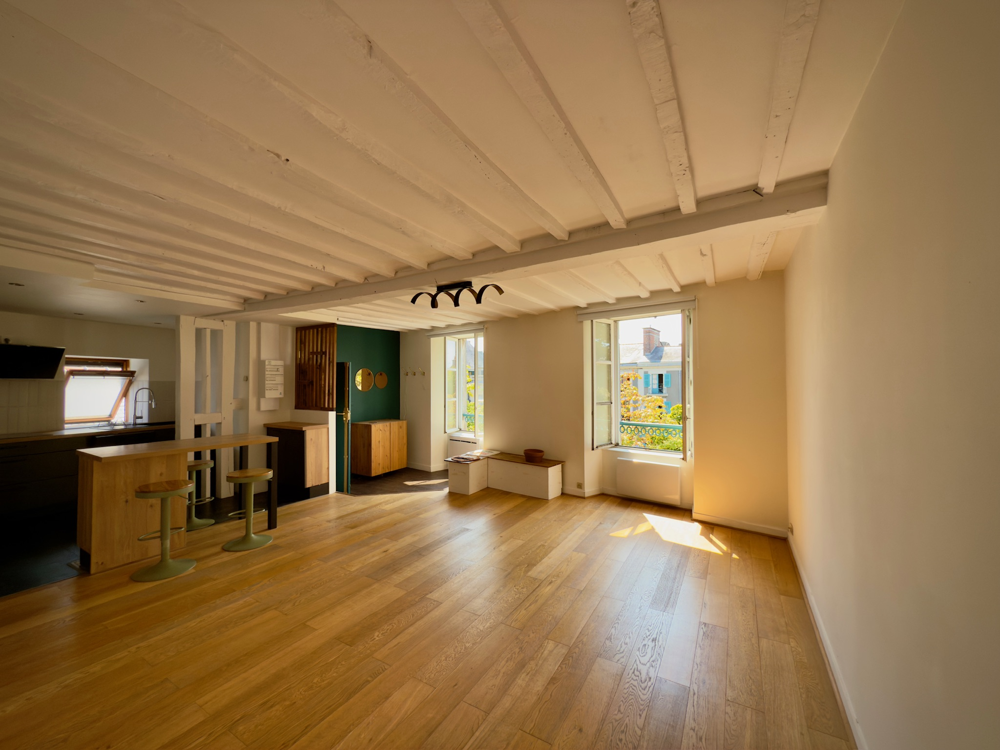
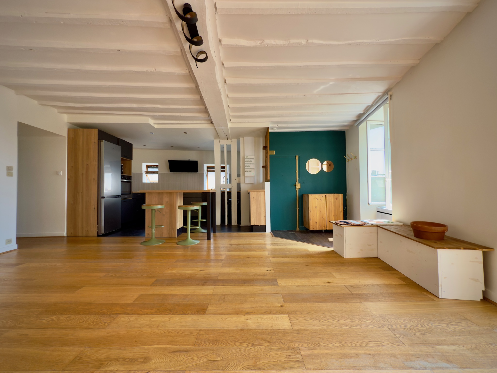

Des travaux déjà réalisés
Cuisine, salle d’eau, tableau électrique, chauffe-eau et fenêtres ont été repris récemment, ce qui permet d’envisager une installation sereine.

Appartement habitable immédiatement, lumineux toute la journée, avec le charme de l’ancien et un potentiel d’évolution grâce au grenier.
Situé sur l’une des places principales du cœur historique de Vitré dans une petite copropriété, l’appartement réunit une adresse très pratique, une belle lumière et des travaux déjà réalisés sur les postes majeurs.
Cuisine, salle d’eau, tableau électrique, chauffe-eau et fenêtres ont été repris récemment, ce qui permet d’envisager une installation sereine.
Parquet, poutres apparentes, exposition plein sud et bonne luminosité donnent à l’ensemble une atmosphère simple, chaleureuse et agréable.
Le grenier complète le bien avec un potentiel intéressant pour un bureau, une chambre d’appoint ou un espace utile au quotidien.
La gare se rejoint en 2 minutes à pied. Commerces, cafés, restaurants, marchés et château sont accessibles immédiatement. Le bien est idéal pour un primo-acdédant qui cherche un appartement de caractère, bien situé et déjà confortable.
